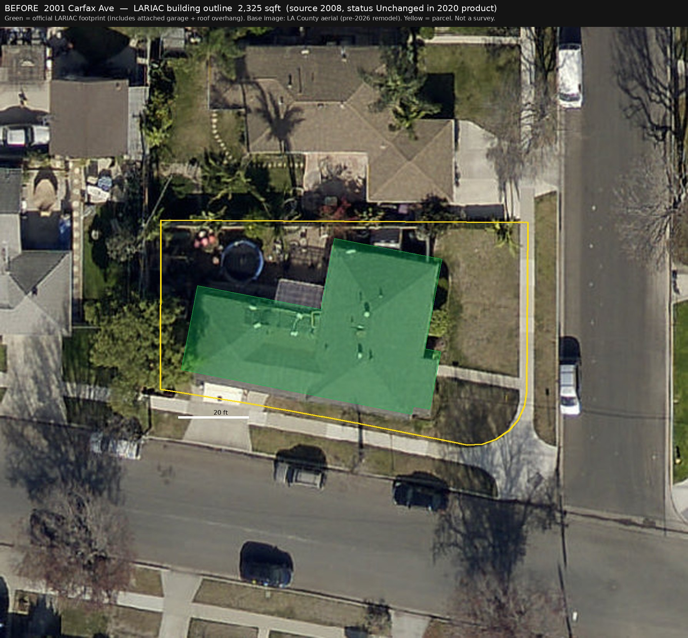
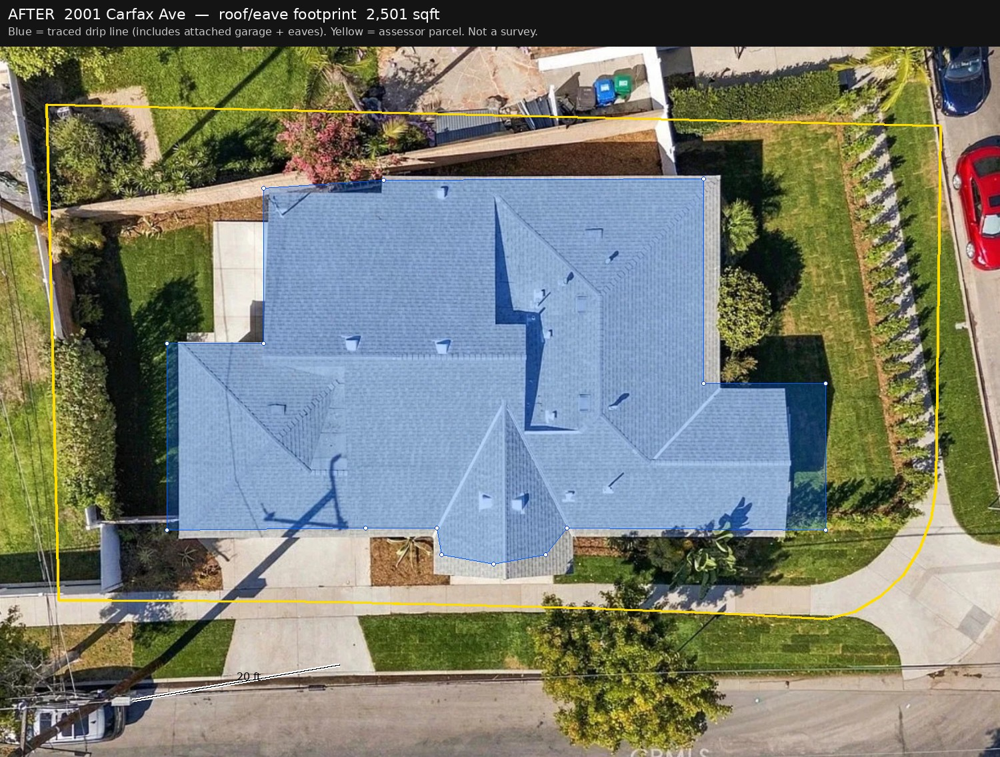
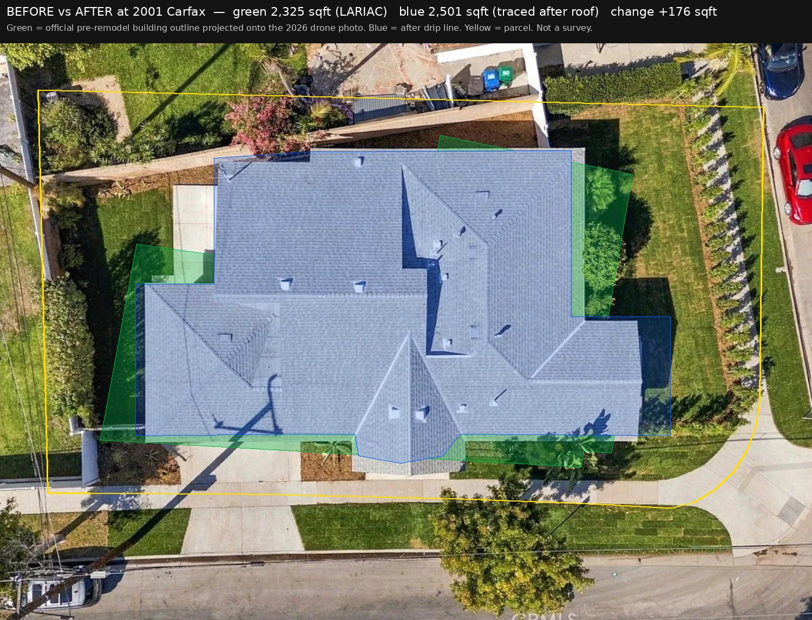
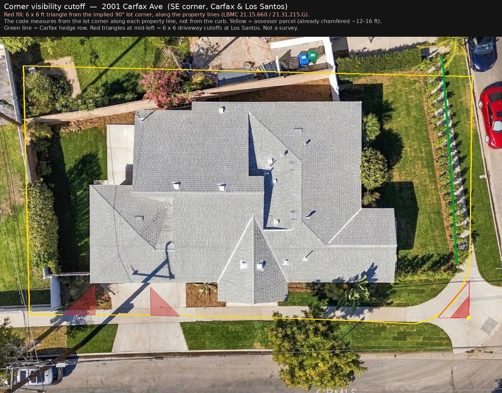

2001 Carfax Ave, Long Beach
A same-year Tesoro Builders flip: bought May 15, 2026 for $925,000 as a 1,040 sqft house, now asking $1,495,000 as 2,015 sqft. The city’s closed addition permit is for 658 square feet, which does not add up to the listed living area.
Research compiled Nov 22–23, 2026 (Pacific Time). This is a public-records review, not an appraisal, inspection, or title report. Every figure is tied to a source; gaps are called out.
At a glance
The listed 2,015 sqft does not match the permit math
Long Beach’s official permit inquiry shows addition BADD338820, closed and finaled Sep 30, 2026, for “Add 658 sf to existing single family dwelling.” The pre-remodel public-record size was 1,040 sqft. 1,040 + 658 = 1,698, not the 2,015 sqft on the listing. The LA County Assessor record still shows 1,040 sqft, 3 bedrooms, and 1 bath. Get the Certificate of Occupancy and a measured/appraised living area before treating 2,015 as fact.
- Status
- Active
- List price
- $1,495,000 ($742/sqft on listed 2,015; $880/sqft on 1,040+658)
- Zestimate
- $1,477,700, as of Nov 22, 2026
- Listed size
- 4 bed / 3 bath / 2,015 sqft, one story
- Assessor size, 2025 roll
- 3 bed / 1 bath / 1,040 sqft
- Lot / year / HOA
- 5,820 sqft corner lot · 1953 · no HOA
- This listing
- About 58–62 days on market; listed Sep 21, 2026 at $1,600,000
- Bought
- $925,000 on May 15, 2026, then remodeled and relisted
Research compiled Nov 22–23, 2026 (Pacific Time). This is a public-records review, not an appraisal, inspection, or title report. Every figure is tied to a source; gaps are called out.
Listing basics
- Address
- 2001 Carfax Ave, Long Beach, CA 90815, corner of Carfax and Los Santos
- Area
- Los Altos / South of Fwy (LSF), MLS area 34 / X-100
- Type
- Single-family, one story, custom/modern, no pool
- MLS
- PW26203992 (CRMLS)
- List price
- $1,495,000, cut Nov 5, 2026 from $1,550,000 and Oct 13 from $1,600,000
- Beds / baths
- 4 bedrooms and 3 full baths, all on the main level
- Living area
- 2,015 sqft on the listing. Source is not stated as Assessor. See permits.
- Lot
- 5,820 sqft (0.1336 acres), source: public records
- Year built
- 1953
- Garage
- 2-car attached, drywalled, epoxy floor, EV outlet
- HOA
- None / $0
- Other fees
- Listings show an other annual assessment of $389; confirm on the tax bill.
- Condition flags
- Additions/Alterations, Building Permit, Updated/Remodeled
- Disclosures
- Home warranty. Staging furniture excluded.
- APN
- 7231003020 (Lot 80)
- Listing agent
- Grace Parris, Keller Williams Coastal Prop., DRE 01460379, (562) 338-3009
- Builder named
- Tesoro Builders
The listing, consistent across Zillow, Hoffman Murphy, MyBeachTeam, and Willis Allen, describes a newly expanded and remodeled Tesoro Builders house: open plan with a vaulted ceiling; kitchen with island, engineered quartz, GE stainless appliances, and a Duro 36-inch six-burner range; primary suite with a sliding door to a tree-lined outdoor space and a porcelain-and-quartz bath; waterproof SPC vinyl floors; dual-pane windows; new 200-amp panel; all-new plumbing including water and sewer lines to the street clean-out; heat-pump HVAC; a new roof; new concrete deck and landscaping; interior laundry with a utility sink. Some listing versions say “see attached supplements: Certificate of Occupancy and Termite Completion.” Those supplements were not retrieved here.
Current price and status were confirmed Nov 22, 2026 on Zillow (price cut $55,000 on Nov 5; 58 days on Zillow; 1,510 views; 129 saves), HomeFinder (62 days on MLS), Hoffman Murphy (updated Nov 22), and MyBeachTeam (58 days, last updated Nov 22). Realtor.com was geo-blocked from this environment. Redfin’s property page still showed the May 15, 2026 sale of the unexpanded 1,040 sqft house at $925,000 and a Redfin Estimate of $914,141; treat that estimate as stale and not a valuation of the remodeled house.
The flip and price history
The May 2026 close is a sale. Later points on the listing chart are asking prices.
This is a same-year flip. On Apr 24, 2026 the house was listed at $925,000 as a 3-bed, 1-bath, 1,040 sqft “prime opportunity” with cosmetic repairs needed, a roof permitted in 2023, a sewer line the then-listing said was installed in 2022, and dual-pane windows (Redfin / CRMLS PW26088201). It went contingent May 3, pending May 11, and closed May 15, 2026 at $925,000, 21 days after listing. The buyer’s agent was Grace Parris of Keller Williams Coastal Prop., the same agent now listing the remodeled house. The prior recorded sale was Jul 1, 1977 for $61,000.
2026 flip listing
Price
Sale history
Sale price
| Date | Event | Price | Source |
|---|---|---|---|
| Jul 1, 1977 | Sold (public record) | $61,000 | Redfin, HomeFinder |
| Apr 24, 2026 | Listed, 3/1, 1,040 sqft | $925,000 | Redfin / CRMLS PW26088201 |
| May 15, 2026 | Sold | $925,000 | Redfin, Coldwell Banker, HomeFinder |
| Sep 20, 2026 | Added to MLS PW26203992 | $1,600,000 | Willis Allen / CRMLS |
| Sep 21, 2026 | Listed as 4/3, 2,015 sqft | $1,600,000 | HomeFinder, MyBeachTeam |
| Sep 25, 2026 | Status change to Active | $1,600,000 | Willis Allen / CRMLS |
| Oct 13, 2026 | Price cut | $1,550,000 | HomeFinder, MyBeachTeam |
| Nov 5, 2026 | Price cut | $1,495,000 | Zillow, HomeFinder |
| Nov 22, 2026 | Still active | $1,495,000 | Zillow, Hoffman Murphy |
The current ask is $570,000, or about 62%, above the May purchase, after $105,000 of cuts from the September ask. The remodeled listing hit the MLS around Sep 20–25, which is before the city’s posted final date of Sep 30, 2026 on addition permit BADD338820. Ask when the Certificate of Occupancy was actually issued, and whether the house was marketed before the permit was finaled.
Permits and the square-footage gap
Permits were pulled from the City of Long Beach official Address Project Inquiry at https://rose.longbeach.gov/HPLandMgmt/PB/SitusInquiry.asp (the tool embedded on the Permit Status Inquiry page). Search used number 2001 and street name Carfax, as the city instructs (no prefix or suffix). No holds were found. The older Inspection History tool did not return inspection line-items for the current project numbers. The Certificate of Occupancy document itself was not retrieved from citydocs/Laserfiche.
| Project | Description | Status / final | Source |
|---|---|---|---|
| BADD338820, Addition | Add 658 sf to existing single family dwelling. Add new kitchen, family room, two (2) bathrooms, and laundry. Remodel bathroom. Install HVAC system. | Closed, final 9/30/2026 | Long Beach Situs Inquiry |
| BRRF294662, Building reroof SFD/duplex | Express online permitting: reroof main dwelling and garage with composition shingles (asphalt), 2380 | Closed, final 8/10/2023 | Long Beach Situs Inquiry |
| CEFR296472, Foreclosure Registry Program | Foreclosure Registry Program | Closed, final 3/27/2025 | Long Beach Situs Inquiry |
| 00089227 (archived) | Remove existing; reroof with 20-year composition shingles | Final 10/31/1990 | Archived Situs Inquiry |
| 00170587 (archived) | Install 80 ft by 6 ft of block wall fence | Final 6/03/1994 | Archived Situs Inquiry |
| Square-footage check | Figure | Source |
|---|---|---|
| Public-record / assessor living area before this remodel | 1,040 sqft | Redfin public record, May 2026 listing |
| Addition permitted in BADD338820 | 658 sqft | Long Beach Situs Inquiry |
| 1,040 + 658 | 1,698 sqft | Arithmetic |
| Current listing living area | 2,015 sqft | MLS PW26203992 |
| Gap, listing minus 1,040 + 658 | 317 sqft | Arithmetic |
| Assessor living area still shown | 1,040 sqft, 3 bed / 1 bath | Redfin public record / tax rolls |
The addition permit is real, closed, and includes the kitchen, family room, two new bathrooms, laundry, a remodeled bathroom, and HVAC, which supports the listing’s remodel story. What it does not support, on its face, is 2,015 sqft. A buyer should compare the C of O and approved plans to a tape or appraisal. No separate 2026 reroof, electrical-panel, or plumbing permit appeared in this official inquiry; those items may have been scoped under BADD338820, but that is not documented in the short description. The current listing calls the roof “new,” while the only reroof permit found was finaled Aug 10, 2023, before this owner bought the house. The April 2026 listing’s “sewer line in 2022” also has no matching standalone permit in this search.
The BADD338820 description does not mention relocating the front door from Carfax to Los Santos, or the hedges around the former Carfax front lawn. Whether those items were on the approved plans could not be verified from the one-line inquiry text; see Corner lot, entrance, hedges and fences.
Tesoro Builders Inc holds California CSLB license 1147207, Class B general building. Secondary license directories report status CLEAR, issued Dec 4, 2025, expiring Dec 31, 2027, with a Redlands locality and Pablo Velasco as the responsible managing officer. Confirm on https://cslb.ca.gov/. The license was only a few months old when this project was built. Grace Parris both bought the property as buyer’s agent in May and is the listing agent now; ask whether she or an affiliated entity is the seller.
Corner lot, entrance, hedges and fences
Moving the front door does not change which yard is the front
Official City of Long Beach zoning GIS classifies this parcel R-1-N (no overlay). On a corner lot, the front lot line is the shortest street frontage, not whichever street the door faces (LBMC 21.15.1150.A). LA County parcel GIS for AIN 7231003020 (Tract 17254 Lot 80), in California State Plane Zone 5 (EPSG:2229), shows Los Santos on the south and Carfax on the east, with the street corner at the southeast. The east (Carfax) straight segment is 48.00 feet plus chamfer segments at the corner; the west line is 48.03 feet; the north (rear) line is 103.96 feet. The south (Los Santos) line is irregular and already chamfered at the southeast. Carfax is still the shorter street frontage and remains the legal front. These lengths are GIS approximations, not a survey.
Code citations below are from a readable copy of the Long Beach Municipal Code, 2026-10 edition, updated Oct 19, 2026, at gocodebook.com, used because library.municode.com did not return usable Title 21 pages when fetched. Official code: https://library.municode.com/ca/long_beach/codes/municipal_code. Zoning confirmed at the Census point 33.79236, −118.11003 on the City’s Zoning feature service (ZONING_SYMBOL R-1-N; no overlay, planned-development subarea, or special-setback polygon; not in a historic district or landmark layer). Map: https://prod-longbeachca.hub.arcgis.com/maps/6722e791ba2f42228175bbc06815fd51. District description: https://longbeach.gov/lbcd/planning/current/zoning/established/.
1. Relocating the entrance. In R-1-N there is no rule that the front door must face a particular street. The pedestrian front-entry standard (“the front entry shall face the front property line or on a corner lot, the side street property line”) applies only “In the R-1-T, R-3 and R-4 zones” (21.31.250). Table 31-2A footnote (g), about orienting new subdivision lots to the side street, attaches to other districts and does not set a door-facing rule for an existing R-1-N house. Every lot has one front yard and one rear yard; all other lines are sides (21.31.215). The required front yard is the area between the front lot line and the required front setback, across the full width of the lot (21.15.1160). In R-1-N that front setback is 20 feet; the side setback is 4 feet (Table 31-2A). So a door moved to face Los Santos does not turn the Carfax yard into a street-side yard for setback or fence-height purposes, as long as Carfax remains the shorter frontage.
A building permit is generally required. “No person… shall erect, construct, enlarge, alter, repair, remodel, move, remove, improve, convert or demolish any building or part of a building or structure… without first obtaining a permit covering such work from the Building Official” (18.04.010.A). The $1,000 valuation exemption in 18.04.020.B.1 does not apply if the work “affects the fire life-safety, structural stability or required accessible route of a building or structure, or public safety.” Cutting a new exterior entrance typically involves a new wall opening and the dwelling’s exit, so it would usually need a permit. BADD338820 is a closed addition permit (final Sep 30, 2026) for 658 square feet, a new kitchen, family room, two bathrooms, laundry, a remodeled bathroom, and HVAC. That posted description does not mention moving the front door or landscaping. Approved plans and the Certificate of Occupancy were not retrieved, so this review cannot confirm whether the new Los Santos door was shown on those plans. The legal situs remains 2001 Carfax Ave.
2. Hedges around the former Carfax front lawn. A hedge is “any cultivated plant growth which is sufficiently dense along a line as to obstruct passage of light, air or solid objects; it does not constitute a fence or garden wall” (21.15.1320). Residential lots must be landscaped under Chapter 21.42 (21.31.285). In every zoning district, required yards “shall be attractively landscaped,” and “Live plant material shall cover a minimum of fifty percent (50%) of any front setback area” (21.42.030.A.3). No general front-yard or street-side hedge height cap was found for R-1-N. The three-foot plant-height limit in corner cutoff areas in 21.42.040.F applies only to “R-3, R-4 and Nonresidential Districts” (21.42.040) and should not be applied to this R-1-N lot.
Two limits still matter. First, a corner cutoff (defined in 21.15.660 as a triangle created by measuring from the corner of a lot six feet by six feet to ten feet by ten feet along each property line or driveway) is required in all residential districts at intersections of streets, driveways, or alleys. “Nothing shall be erected or allowed to grow within the corner cutoff in such a manner as to impede visibility or accessibility up to eight feet (8') in height. Corner cutoffs shall be a minimum of six feet by six feet (6′ × 6′)” (21.31.215.G). That reaches hedges, not just fences. Information Bulletin IB-BU-041 (rev. May 25, 2018) uses slightly different wording (“from three feet to eight feet”); the current code text in 21.31.215.G is the controlling standard. Second, in the public parkway (typically the strip between curb and sidewalk, and any strip between sidewalk and the private line), continuous hedge-like plantings are prohibited; allowed parkway plants are groundcover not more than eight inches high, accent plantings or shrubbery not more than thirty-two inches high, and street trees; fencing in the parkway is prohibited except six-inch curbing (21.42.050.C.2, .D.3.b, .D.3.d). Parkway landscaping must also be kept from interfering with traffic lines of sight (21.42.050.D.2). Hedges on the private former front lawn are generally allowed if they leave at least 50% live plant cover in the front setback and do not grow so as to block the cutoff or sit as a continuous hedge in the parkway. Existing hedge height and exact placement relative to the cutoff and parkway were not field-measured.
3. A fence inside the hedge line. Putting the fence inside the hedges does not change which yard it is in. Fences and garden walls are permitted accessory structures in all zones, subject to Chapter 21.43 (21.43.010). Height is measured from grade on the public-right-of-way side for fences adjoining the right-of-way, and from the average grade of both sides between private properties (21.43.020). Residential limits are in Table 43-1:
| Location (residential, Table 43-1) | Maximum height | Notes |
|---|---|---|
| Required front yard (here, the 20-foot setback from Carfax, across the lot) | 3 feet | Notes (b) and (f): 4 feet in a City Council “special fence height area” if the extra foot is wrought iron or chain link; taller than 3 feet in a designated high-crime area only with an administrative use permit (21.52.231.5). Neither designation was verified for this parcel. |
| Other required yard (including the Los Santos street-side yard) | 6 feet 6 inches | R-1-N side setback in Table 31-2A is 4 feet. No larger street-side setback was found for R-1-N (the 15% street-side rule in footnote (q) applies to other districts). |
| Outside of required yard area | 10 feet | |
| Corner cutoff (all zones) | 3 feet | Exception (a)(iv): chain link and wrought iron/metal tubing more than 3 feet are allowed in the cutoff if they do not obstruct visibility. |
| Abutting a nonresidential district or use; or an alley / flood-control channel / non-street right-of-way; or a major arterial under note (d) | 8 feet | Notes (c) and (d). Not indicated for this interior Los Altos corner. |
Open versus solid: no general residential rule was found that a front-yard fence must be open or must be solid. The openness requirements that do appear are the 3-foot cutoff cap, the exception allowing taller open chain link or metal tubing in the cutoff if visibility is not blocked, and the special-area extra foot being wrought iron or chain link. Materials: barbed wire or similar fencing with sharp, protruding objects capable of cutting or puncturing a person is prohibited in residential zones and may not be attached to, embedded in, or laid upon any fence or wall; decorative wrought iron is excluded from that ban (21.43.030). No general R-1 prohibition on chain link, wood, masonry, or wrought iron was found in Chapter 21.43. Gates and fence doors cannot swing over public property or the right-of-way (IB-BU-041).
Permits. The City’s fence page and IB-BU-041 say Planning Bureau review and approval of location, height, and material are required in all cases, even when a building permit is not. Current Title 18 (18.04.020.B.4, 2026-10 edition, ORD-25-0019) says a building permit is not required for fences of materials other than concrete, masonry, brick, heavy timber, or similar that are not over seven (7) feet above grade, or for fences built partly or wholly of those masonry/heavy-timber materials that are not over four (4) feet above grade, provided the work does not violate the zoning regulations. That exemption still requires compliance with zoning height limits; the subsection cites Section 21.46.020, but a current 21.46.020 was not retrieved, and the operative height table in the 2026-10 zoning code is Table 43-1 in Chapter 21.43. IB-BU-041 (2018) and https://longbeach.gov/lbcd/building/inspection/fences-walls/ still say a building permit is required for wood, chain link, or wrought iron over 6 feet 6 inches, or for concrete, masonry, or brick over 4 feet. The current code text in 18.04.020.B.4 (7 feet / 4 feet) is the later standard; zoning still caps most required yards at 3 feet or 6 feet 6 inches, so a 7-foot wood fence would be legal only where Table 43-1 allows it (outside required yards, up to 10 feet) and would still need Planning approval. Retaining walls or planter boxes need a building permit if over 4 feet measured from the bottom of the footing to the top of the wall, if they support a surcharge or sloping earth, or if built on a slope steeper than 20% (18.04.020.B.5). The official inquiry already lists an archived 1994 permit, 00170587, for “Install 80 ft by 6 ft of block wall fence,” finaled Jun 3, 1994; whether that wall is still in place was not verified in the field.
The listing states there is no HOA. Recorded CC&Rs were not searched at the Los Angeles County Recorder, so a private restriction is not ruled out from this review. Los Altos is not a City historic district at this point on the official historic-district layer, so a Certificate of Appropriateness was not indicated.
What could not be verified: approved plans and the Certificate of Occupancy for BADD338820 (so whether the door relocation was in that permit); survey-grade street frontages; whether this parcel is in a “special fence height area” or a high-crime area eligible for a front-yard fence AUP; current official text of 21.46.020 and of 21.15.1660 / 21.15.1690 (reversed-corner definition); and recorded CC&Rs. A photo-based estimate of the hedges versus the corner cutoff is in Building footprint, before and after; it is not a field survey, and parkway placement was not measured on the ground.
Building footprint, before and after
The roof outline grew only modestly, even though the house was clearly reconfigured toward Carfax. This is a roof-and-eave footprint, not living area: it includes the attached garage and typical eave overhang in both years. Measured Nov 23, 2026, Pacific Time. Not a survey.
| Measure | Square feet | Source | Confidence |
|---|---|---|---|
| Before roof / building outline | 2,325 | Official LARIAC Buildings 2020 (BLD_ID 528186746882, source LARIAC2 / 2008, status Unchanged). Matches the 2011 and later pre-remodel county aerials. | High |
| After roof / drip line | About 2,500 (range 2,400–2,650) | Drip line traced on the 2026 MLS drone photo and scaled to California State Plane Zone 5 feet (EPSG:2229) with a parcel-corner homography. | Moderate |
| Net roof increase | About +175 (range +80 to +330) | After minus LARIAC. Alternate fits and ±8-pixel ground-control nudges drive the range. | Moderate |
| New roof only / old roof no longer under the new drip line | About 610 new, 435 pulled back | Overlap of the two outlines under the same georeference. More sensitive to remaining alignment error than the net. | Low–moderate |
| Wall-line estimate, 1.5–2 ft eave inset | Before 1,815–1,939; after 2,045–2,156; increase about +216 to +230 | Geometric inset of each outline. Typical eave, not a measured soffit. | Low–moderate |
| Assessor living, still shown | 1,040 | LA County Assessor / public record | High, as enrolled |
| Permitted addition (BADD338820) | 658 | Long Beach Situs Inquiry | High, as posted |
| 1,040 + 658 | 1,698 | Arithmetic | — |
| Listed living area | 2,015 | MLS PW26203992 | Unverified |
| Listing minus assessor | 975 | Arithmetic | — |
Official north-up aerials show Los Santos on the south and Carfax on the east, with the street corner at the southeast. The drone photo is oriented the same way (Los Santos at the bottom, Carfax at the right). The west wing is the garage, attached and under the continuous roof, accessed from a Los Santos driveway, in both the 2011 aerial and the 2026 photo. The user’s Google Earth 3D before oblique was not on disk, so the before number is the official LARIAC outline checked against public top-down county imagery. No 2026 post-remodel ortho was found; Esri World Imagery at this parcel still showed the pre-remodel house.
The overlay is a reconfiguration, not a simple eastward bump: the new drip line extends about 7 feet farther east into the old Carfax front yard and adds a south-facing entry gable on Los Santos, while the west and south edges sit a few feet inside the old outline. Under the same georeference, roughly 610 sqft of roof is new and roughly 435 sqft of the old outline is gone, for a net of about 175. That 610 sqft of new roof is in the same ballpark as the 658 sf addition permit, but the split is more fragile than the net because the drone is not a true ortho and the southeast chamfer still has a residual of about 6–11 feet. A 975 sqft living-area increase (2,015 minus 1,040) does not fit a ~175 sqft net roof increase as a simple expansion of the building envelope. A consistency check, not a proof: 1,698 living (the permit math) plus a typical 400–440 sqft two-car garage plus roughly 350–400 sqft of eaves lands near 2,450–2,540, on top of the after-roof estimate; 2,015 of living under a ~2,500 sqft roof would leave little room for that garage and the eaves. Garage and eave sizes here are typical, not taken from plans. The listing does describe a two-car attached garage.




Long Beach measures the corner cutoff from the corner of the lot along each property line or driveway, not from the curb (21.15.660; 21.31.215.G, minimum 6 feet by 6 feet, nothing may grow so as to impede visibility up to 8 feet). The property line is typically at the back of the sidewalk when the sidewalk lies in the public right-of-way. This parcel already has a rounded southeast cut of about 12–16 feet, larger than the 6 × 6 minimum; the drawn 6 × 6 from the implied 90° corner falls mostly in that existing cut and the sidewalk, not in the planted lawn.
The Carfax hedge row appears to sit outside that implied 6 × 6 triangle. The nearest traced hedge point, at the south end of the row, is about 10 feet from the triangle. Because the southeast georeference still has a residual of up to about 11 feet, that 10-foot gap could be smaller, and this review cannot rule out the last one or two plants sitting near the edge. Visually, a run of lawn and sidewalk remains between the last hedges and the red triangle, and the hedge row does not stand in the middle of the cutoff. Parkway plants and a street tree along Los Santos also fall outside the triangle in this overlay. Confidence is moderate, and this is a photo-scale estimate, not a field survey. The Los Santos driveway 6 × 6 marks are at both edges of the west concrete garage apron where it meets the south property line.
What could not be verified: a true 2026 post-remodel ortho; the user’s before oblique (it was not on the machine); approved plans or a Certificate of Occupancy that would show designed living area, garage area, and eave depth; and a field survey of the hedges versus the cutoff. Areas were computed in State Plane feet, not Web Mercator.
Taxes and public records
APN 7231003020. Official roll figures should be confirmed at https://portal.assessor.lacounty.gov/. Redfin’s public-record tax table and HomeFinder’s tax table disagree slightly on the latest year label. Redfin shows 2025 tax $2,659 on assessed $178,817 (land $71,479, improvements $107,338). HomeFinder shows 2025 tax $2,658 on assessed $182,392 (land $72,908, improvements $109,484), and 2024 at $178,817. $182,392 is exactly a 2% Prop 13 increase from $178,817, so HomeFinder’s “2025” row may be the newer roll. In either case, the enrolled value is still the old long-term-owner base, not the $925,000 May 2026 sale or the new addition.
| Year (HomeFinder) | Tax | Assessed | Land | Improvements |
|---|---|---|---|---|
| 2025 | $2,658 | $182,392 | $72,908 | $109,484 |
| 2024 | $2,560 | $178,817 | $71,479 | $107,338 |
| 2023 | $2,522 | $171,875 | $68,704 | $103,171 |
| 2022 | $2,380 | $168,506 | $67,357 | $101,149 |
| 2021 | $2,334 | $165,203 | $66,037 | $99,166 |
| 2019 | $2,300 | $160,305 | $64,079 | $96,226 |
The May 2026 change in ownership at $925,000 starts a new Prop 13 base year, and the permitted addition will also be assessed. A buyer at $1,495,000 should expect the tax bill to be reset near the purchase price, plus any special assessments (listings show $389 other annual assessment), not remain near $2,658. That is a large jump. The city’s Foreclosure Registry case CEFR296472 was closed Mar 27, 2025, before this sale. TopHap still displayed a “pre-foreclosure (NOD)” flag; treat that as something to clear on a current title report, not as proof of a live foreclosure against the present owner.
Inspection and local concerns
No public inspection report was found, other than the listing’s claim that a termite-completion supplement is attached. The house is a brand-new addition and full systems remodel, finaled Sep 30, 2026, and is already back on the market. That is short seasoning. A buyer still needs an independent inspection, sewer scope, roof review (2023 reroof versus “new roof” claim), and a look at the addition’s foundation and drainage, especially because the parcel is in a mapped liquefaction zone.
- Liquefaction. LA County hazard GIS places this point in a California Geological Survey liquefaction zone (Los Alamitos quad, zone released Mar 25, 1999). That matters for a 2026 addition. Ask for the soils report used in plan check.
- Airport. The house is about 2.63 miles from Long Beach Airport at 4100 Donald Douglas Dr (Census geocoder). A parcel-level official 65 CNEL contour was not opened this turn. Secondary noise-map writeups say Los Altos south of the 405 is outside the 65 CNEL contour. Visit during flight hours and check https://longbeach.gov/lgb/community-information/noise-abatement.
- Freeway. The subdivision name is Los Altos/South of Fwy. The 405 is nearby; drive-by at rush hour rather than relying on a listing’s “tree-lined” description.
Crime
Official LBPD incident records were pulled for two windows: the prior year (date_reported Nov 1, 2024 through Nov 1, 2025) and the latest year (Nov 1, 2025 through Nov 1, 2026, the last date in the city’s open dataset when this was queried). Both endpoints are inclusive, so Nov 1, 2025 appears in each window. That one-day overlap does not change the 0.25- or 0.5-mile counts (zero locatable records that day in either radius). Citywide, 74 records on Nov 1, 2025 are in both totals and do not change the direction of the citywide decline. The feed is published with a 21-day delay (LBPD Crime Dashboard announcement, Dec 4, 2025). Counts are reported records, not unique events. Addresses are 100-block anonymized; distances use Census-geocoded block points to 33.79236, −118.11003. Sexual-assault addresses are redacted, so those records cannot be placed in a radius.
0.25 mile
| Type | Prior year | Latest year | Change |
|---|---|---|---|
| Violent (incl. simple assault / intimidation) | 7 | 7 | 0 |
| UCR-style violent (subset) | 1 | 4 | +3 |
| Burglary | 2 | 2 | 0 |
| Vehicle break-in / auto theft | 3 | 5 | +2 |
| Theft (other larceny) | 2 | 7 | +5 |
| Other | 0 | 3 | +3 |
| Total locatable records | 14 | 24 | +10 |
0.5 mile
| Type | Prior year | Latest year | Change |
|---|---|---|---|
| Violent (incl. simple assault / intimidation) | 20 | 12 | −8 (−40%) |
| UCR-style violent (subset) | 3 | 6 | +3 |
| Burglary | 3 | 3 | 0 |
| Vehicle break-in / auto theft | 13 | 17 | +4 (+31%) |
| Theft (other larceny) | 14 | 29 | +15 (+107%) |
| Other | 9 | 9 | 0 |
| Total locatable records | 59 | 70 | +11 (+19%) |
Citywide
| Type | Prior year | Latest year | Change |
|---|---|---|---|
| Violent (incl. simple assault / intimidation) | 9,635 | 9,314 | −321 (−3.3%) |
| UCR-style violent (subset) | 3,340 | 3,159 | −181 (−5.4%) |
| Burglary | 2,154 | 1,800 | −354 (−16%) |
| Vehicle break-in / auto theft | 4,793 | 3,523 | −1,270 (−26%) |
| Theft (other larceny) | 5,700 | 4,780 | −920 (−16%) |
| Other | 6,967 | 5,434 | −1,533 (−22%) |
| Total records | 29,249 | 24,851 | −4,398 (−15%) |
Source: DataLB dataset “LBPD Criminal Incident Data,” queried Nov 22, 2026 (data processed 8:00 a.m. PT that day), at https://data.longbeach.gov/explore/dataset/lbpd-criminal-incident-data/information/, using the same NIBRS buckets and radii as the latest-year counts. The 2000 block of Carfax had zero records in both windows. The only 2000 Carfax record in the 2023–present file remains a motor-vehicle theft on Jun 24, 2023. A single prior-year auto burglary was reported on the 2300 block of Carfax on Dec 7, 2024, 0.49 mile north of the house.
Year over year, Long Beach as a whole fell from 29,249 to 24,851 records (−15%), with the steepest drop in vehicle-related records (−26%). Inside 0.5 mile the opposite happened on property crime: locatable records rose from 59 to 70 (+19%), theft went from 14 to 29, and vehicle-related records went from 13 to 17. Vehicle-related share inside 0.5 mile stayed high (13 of 59, or 22%, then 17 of 70, or 24%) while the citywide vehicle share fell from 16% to 14%. Broad violent records inside 0.5 mile fell from 20 to 12 (−40%), mostly a drop in simple assault (17 to 4). UCR-style violent records in that radius rose from 3 to 6; those are small counts and should not be read as a solid rate change. Inside 0.25 mile the total rose from 14 to 24, a small base, with violent counts flat at 7 but a shift toward more aggravated-assault records (1 to 4). Burglary was unchanged in both radii (2 and 3). The latest-year theft increase may include some vehicle-parts cases labeled as grand or petty theft in open data.
Latest-year radius totals still exclude three sex-offense records in the home’s reporting district (RD 634) whose addresses were redacted: a rape at a commercial location on Feb 16, 2026, and two fondling records (one residential, one commercial) on Mar 29 and Apr 23, 2026. In the prior year, RD 634 had no sex-offense records in this dataset, but five sex-offense records in the seven nearby reporting districts used for geocoding were redacted (RDs 631, 632, 633, and 653) and also could not be distance-filtered. Official unit totals, not radius-filtered: RD 634 went from 109 to 124 records; Beat 15 went from 484 to 441.
| Area | Records | UCR-style violent | Vehicle-related |
|---|---|---|---|
| 0.25-mile radius (locatable) | 24 | 4 | 5 |
| 0.5-mile radius (locatable) | 70 | 6 | 17 |
| Reporting district 634 (includes this house) | 124 | 13 | 16 |
| Beat 15 (includes this house) | 441 | 41 | 53 |
| East Division (much larger than Los Altos) | 6,782 | 596 | 971 |
| City of Long Beach | 24,851 | 3,159 | 3,523 |
LBPD does not publish a Los Altos neighborhood total. RD 634 and Beat 15 are the official units that contain 2001 Carfax. Vehicle-related share inside 0.5 mile (17 of 70 records) is higher than the citywide share (3,523 of 24,851). UCR-style violent share inside 0.5 mile (6 of 70) is slightly below the citywide share (3,159 of 24,851). UCR-style here means murder and nonnegligent manslaughter, rape, robbery, and aggravated assault. Broad “Violent” also includes simple assault, intimidation, other sex offenses, additional homicide categories, and kidnapping. Vehicle-related in this table is NIBRS motor-vehicle theft plus auto burglary. Open data often labels catalytic-converter or parts theft as grand or petty theft, so the Theft row may include some vehicle-parts cases.
| Date reported | Record | 100-block | Miles |
|---|---|---|---|
| Nov 5, 2024 | Burglary — residential | 6400 Bayard St | 0.15 |
| Dec 7, 2024 | Auto burglary | 2300 Carfax Ave | 0.49 |
| Feb 10, 2025 | Petty theft | 6200 Los Santos Dr | 0.09 |
| Feb 11, 2025 | Burglary — residential | 6400 El Paseo St | 0.19 |
| Feb 12, 2025 | Aggravated assault | 2200 Farolito Ave | 0.23 |
| Mar 22, 2025 | Motor vehicle theft | Palo Verde Ave & Los Santos Dr | 0.12 |
| May 18–23, 2025 | Three simple-assault records (two on May 18) | 6400 Stearns St (commercial) | 0.24 |
| May 30, 2025 | Residential burglary, grand theft, and stolen property (three records) | 6400 El Roble St | 0.38 |
| Oct 25, 2025 | Simple assault | 6200 Los Santos Dr | 0.09 |
Prior-year notable records, above, include the closest activity to the house: a petty theft and a simple assault on the 6200 block of Los Santos (0.09 mi) and a motor-vehicle theft at Palo Verde and Los Santos (0.12 mi). The only same-street record in either year is the Dec 7, 2024 auto burglary on the 2300 block of Carfax (0.49 mi). Two residential burglaries landed inside 0.25 mile that year (Bayard and El Paseo). Same-day, same-block pairs may be related offenses, not always separate events.
| Date reported | Record | 100-block | Miles |
|---|---|---|---|
| Dec 1, 2025 | Burglary — residential | 2000 Snowden Ave | 0.09 |
| Feb 7, 2026 | Aggravated assault | 2000 Palo Verde Ave | 0.12 |
| Feb 16, 2026 | Motor vehicle theft | 2000 Conquista Ave | 0.06 |
| Apr 13, 2026 | Aggravated assault | 6400 Stearns St (commercial) | 0.24 |
| Jul 7, 2026 | Commercial burglary and vandalism (two records) | 1900 Palo Verde Ave | 0.16 |
| Jul 24, 2026 | Motor vehicle theft and grand theft (two records) | 2000 Snowden Ave | 0.09 |
| Aug 15, 2026 | Two aggravated-assault records; the official map shows one event at 8:31 p.m. | 6300 Stearns St | 0.22 |
| Sep 19, 2026 | Motor vehicle theft | 6400 Fairbrook St | 0.14 |
| Oct 26, 2026 | Motor vehicle theft | 2100 Palo Verde Ave | 0.18 |
Latest-year notable records, above: the closest locatable records are on the 2000 blocks of Conquista (0.06 mi) and Snowden (0.09 mi). The only residential burglary inside 0.5 mile in the latest year was that Dec 1, 2025 Snowden case; the other two burglaries in the half-mile were commercial, on Palo Verde. No locatable robbery, homicide, or rape fell inside 0.5 mile in either year. Several assaults sit toward the Stearns / Palo Verde commercial edge rather than on Carfax itself.
The official LBPD Crime Incident Mapping Application (RMS, updated weekly, typically the past six months) was also queried spatially at https://longbeach.gov/police/crime-info/crime-incidents and https://experience.arcgis.com/experience/4edf8be3d86a4d35bd20f17735441038. The layer’s citywide dates were May 20, 2026, 12:17 a.m. PT through Nov 17, 2026, 11:18 p.m. PT. Inside 0.5 mile it showed 34 points from May 20 through Oct 30, 2026, and no additional points after Oct 30. Of those 34, 23 were vehicle-related, including 11 motor-vehicle thefts and 11 “theft of motor vehicle parts or accessories,” plus one theft from a motor vehicle. Inside 0.25 mile: 13 points, 9 of them vehicle-related. Type labels differ from the 12-month NIBRS open data and should not be added together.
| Area | Finding | As of | Source |
|---|---|---|---|
| Los Altos, Long Beach | Overall B, violent A- (about 8.0 violent crimes per 1,000, 40% below the U.S. and 54% below Long Beach as a whole), property C- | Updated November 2026 | CrimeGrade |
| Long Beach as a whole | CrimeGrade grades citywide violent crime C+. It also reports citywide reported violent crime up 29% since 2019. | Updated November 2026 | CrimeGrade |
Los Altos still grades as one of the safer Long Beach neighborhoods for violent crime on CrimeGrade’s modeled scale; property crime is the weaker grade. Those are neighborhood estimates, not official counts for this corner. Official records around 2001 Carfax are consistent with a quieter residential pocket whose main local pattern is vehicle and vehicle-parts crime on surrounding streets, with a small number of assaults nearer Stearns and Palo Verde.
What this means for a buyer: the 2000 block of Carfax itself was quiet in both years. Citywide records fell about 15%, including a sharp drop in vehicle crime, but this half-mile did not follow that property-crime decline — theft and auto theft/break-ins rose, and that remains the practical risk to underwrite, along with ordinary awareness near the Stearns commercial edge. Broad violent records nearby fell, mostly simple assaults, while a handful of aggravated assaults in the latest year keep that from being a clean “safer” story; those counts are small. Check the official map again before closing — open data lags about 21 days, addresses are anonymized to the 100-block, and sex-offense records in nearby districts (including three in RD 634 in the latest year) could not be located. Standard habits (lighting, cameras, not leaving valuables in cars) matter more than a violent-crime narrative.
NeighborhoodScout was not retrieved. CrimeMapping.com, CommunityCrimeMap / LexisNexis, and SpotCrime were not used for counts; no complete, citeable address-level extract from those third-party maps was obtained. Official LBPD open data and the official incident map were used instead. Nov 2–22, 2026 is not in the open dataset; the map layer extends through Nov 17, 2026 but showed no additional incidents inside 0.5 mile after Oct 30.
Environmental hazards and airport noise
Hazard findings use LA County GIS layers at the Census-geocoded point 33.79236, −118.11003, plus CalEnviroScreen 4.0 for tract 5743 (GEOID 06037574300). Confirm flood status at https://msc.fema.gov/portal/search. A property-specific EnviroStor / GeoTracker radius search was not completed; run the address at https://geotracker.waterboards.ca.gov/ and https://www.envirostor.dtsc.ca.gov/public/.
| Topic | Finding | Source |
|---|---|---|
| Flood (county layers) | Point did not intersect the county 100-year or 500-year flood-plain layers. | LA County GIS, layers 11 and 12 |
| Dam inundation | Point is inside the Prado Dam inundation area (earth fill, Army Corps). This is residual catastrophic-failure risk, not a typical riverine flood zone. | LA County GIS, layer 14 |
| Fire | Local Responsibility Area, class NonWildland, not in a mapped Fire Hazard Severity Zone (layer revised Aug 21, 2025). | LA County GIS, layers 1, 2, 18 |
| Earthquake / fault | Point did not intersect Alquist-Priolo traces or zones, or the county USGS fault layer. | LA County GIS, layers 4, 5, 17 |
| Liquefaction | Inside a mapped liquefaction zone, Los Alamitos quad, released Mar 25, 1999. | LA County GIS, layer 9 |
| Landslide / tsunami | Point did not intersect those county layers. | LA County GIS, layers 7, 8 |
| LGB noise | About 2.63 miles from 4100 Donald Douglas Dr. Official parcel-level 65 CNEL not confirmed here. | Census geocoder; LGB noise page |
CalEnviroScreen 4.0 for tract 6037574300, ZIP 90815, population 6,052: overall score 13.87, 23rd percentile statewide (20–25% range). That low overall score is driven by very low population-characteristic percentiles (7th). Pollution burden is high: 84th percentile statewide. The standouts are toxic releases (97th), traffic (82nd), cleanup sites (80th), hazardous waste (78th), impaired water bodies (77th), lead (72nd), diesel PM (68th), and PM2.5 at 11.60 µg/m³ (63rd). This is a relatively advantaged neighborhood with a heavy industrial-and-traffic pollution burden in the official file.
Neighbors and comps
Subject $/sqft uses the listed 2,015 sqft unless noted. Neighbor estimates are not sales.
Adjacent and nearby Carfax houses are still mostly original-scale 1,050–1,600 sqft homes. HomeFinder value estimates, not sales, included 2009 Carfax at about $1,119,900 (3/2, 1,180 sqft) and 2000 Carfax at about $1,386,732 (4/2.5, 2,086 sqft). Closed sales are the better guide.
| Home | Close / status | Size | Notes |
|---|---|---|---|
| 2001 Carfax (subject) | $1,495,000 list | Listed 4/3 · 2,015 · $742/sqft | Flip; permitted addition 658 sf |
| 6320 E Los Santos | $1,412,000, Jul 14, 2025 | 4/3 · 2,034 · $694/sqft | Same LSF area, remodeled, sold over $1,300,000 ask |
| 1811 Tevis | $1,395,000 or $1,420,000, Jun 6, 2025 | 5/2 · 2,018 sqft | Remodeled; RE/MAX page shows both figures, confirm deed |
| 1820 Carfax | $1,300,000, Jul 8, 2025 | 1,597 sqft · $814/sqft | Same street |
| 2201 Carfax | $1,300,000, Oct 21, 2024 | 1,795 sqft · $724/sqft | Same street |
| 2306 Carfax | $1,105,000, Mar 25, 2026 | 1,130 sqft · $978/sqft | Unexpanded, just before this flip purchase |
| 2009 Carfax | $1,054,000, Mar 22, 2024 | 3/2 · 1,180 · $893/sqft | Near neighbor, unexpanded scale |
| 2279 Carfax | $880,000, Dec 17, 2024 | 1,209 sqft · $728/sqft | Same street |
| 2001 Carfax, May 2026 | $925,000, May 15, 2026 | 3/1 · 1,040 · $889/sqft | This house, pre-remodel |
Market context: HomeFinder showed a Long Beach median list of $719,500, median list $621/sqft, median sold $850,000, and 61 days on market, and a Los Altos South median listing of $1,381,500. The closest like-kind sales found are remodeled ~2,000 sqft LSF homes from mid-2025: 6320 E Los Santos at $1,412,000 ($694/sqft) and 1811 Tevis at about $1.40 million on 2,018 sqft. The current ask is higher in dollars and, on the listed 2,015 sqft, higher per foot than 6320 E Los Santos. If living area is closer to the permitted 1,698 sqft, the ask looks even richer at about $880/sqft. Unremodeled Carfax sales in the $880,000–$1,105,000 range show what the street’s original 1,100 sqft houses actually bring; this flip is asking $390,000 or more above those, which is the point of the addition, but the market has already cut $105,000 and still has not taken it in 62 days.
Schools, walkability, commute
Assigned schools are from the listing (Minnie Gant, Stanford, Wilson, Long Beach Unified) and should be verified with LBUSD. Ratings are GreatSchools, 2026.
| School | Grades | GreatSchools | Distance |
|---|---|---|---|
| Gant Elementary, 1854 N Britton Dr | K–5, 657 students | 9/10 | 0.55 mi |
| Stanford Middle, 5871 E Los Arcos St | 6–8 | 7/10 | 0.71 mi |
| Wilson High, 4400 E 10th St | 9–12 | 6/10 | 2.03 mi |
Distances are Census-geocoder point-to-campus. Gant is 9/10, top 16% in California on the 2026 GreatSchools rating, with a 10/10 test-score rating (78% math and 83% English proficient versus state averages of 37% and 49%). That school is a real part of the value, but enrollment should still be confirmed with the district.
- Walk Score
- 65 out of 100, Somewhat Walkable. https://www.walkscore.com/score/2001-carfax-ave-long-beach-ca-90815
- Transit Score
- 38 out of 100
- Bike Score
- 63 out of 100
- Commute
- Los Altos/South of Fwy, with 405 access nearby. Drive times were not independently timed. Long Beach Airport is about 2.6 miles away.
Red flags, questions, and verdict
What works
- A closed city addition permit exists, finaled Sep 30, 2026, covering kitchen, family room, baths, laundry, and HVAC.
- The listing offers a C of O and termite completion as supplements, and systems (panel, plumbing, heat pump) are described as new.
- Corner lot in Los Altos South of Fwy, no HOA, two-car garage, and a walk to Gant Elementary (GreatSchools 9/10).
- Violent-crime grades for Los Altos are strong relative to Long Beach, and official LBPD records show no incidents on the 2000 block of Carfax in either of the last two 12-month open-data windows. The main nearby pattern is vehicle and vehicle-parts theft, which rose in this half-mile even as citywide vehicle crime fell. Walk Score 65 is usable.
- The May 2026 purchase at $925,000 looks in line with other unexpanded Carfax sales, so the starting basis was not obviously inflated.
What to watch
- Listed 2,015 sqft versus permitted 658 sf added to a 1,040 sqft house (1,698). Assessor still shows 1,040 / 3 / 1. A before/after roof-outline estimate shows only about 175 sqft of net roof growth (range roughly 80–330), which does not support a 975 sqft living-area increase as a simple expansion.
- Same-year flip: $925,000 in May, listed at $1,600,000 in September, now $1,495,000, already cut $105,000 and sitting 62 days.
- MLS went live around Sep 20–25, before the posted permit final date of Sep 30.
- The listing agent also represented the May buyer. The contractor’s B license was issued Dec 4, 2025.
- “New roof” sits next to a 2023 reroof permit and no separate 2026 reroof in the official inquiry.
- Parcel is in a liquefaction zone and a Prado Dam inundation area. Pollution burden in this tract is in the 84th percentile.
- At $1,495,000, or $742/sqft on the listed size, it is priced above mid-2025 remodeled ~2,000 sqft LSF comps such as 6320 E Los Santos at $1,412,000 ($694/sqft).
- Provide the Certificate of Occupancy, finaled plans, and the approved living-area figure. Reconcile 2,015 with the 658 sf addition and the 1,040 assessor baseline.
- Independent measurement or appraisal of livable square footage, and a full inspection of the addition, foundation, grading, and drainage given the liquefaction zone. Ask for the soils report.
- Roof: was there a 2026 reroof, or is the 2023 roof being called new? Get age, layers, and any warranty.
- Permits for the 200-amp panel, sewer and water laterals, and heat pump if they are not fully inside BADD338820.
- Who is the seller? Is Grace Parris or an affiliate the owner? What did the remodel cost, and will the agent-owner relationship be disclosed?
- Current title: clear the 2025 foreclosure-registry / any NOD flag, and confirm no open city holds (none showed on the official holds search).
- Tax estimate at the eventual purchase price, plus the $389 assessment, and when the assessor will pick up the new square footage.
- Visit at rush hour and during LGB flight periods. Confirm Gant / Stanford / Wilson attendance with LBUSD.
- Check the official LBPD crime-incident map again before closing; the open dataset lags about 21 days.
- If adding a fence inside the Carfax hedges, confirm Planning review, the 3-foot front-yard height cap, and the corner visibility triangle (21.31.215.G and Table 43-1). Ask the seller for approved plans showing the Los Santos entrance.
Verdict: interesting house, aggressive ask, and one square-footage question that has to be answered before the price means anything. The remodel and the closed addition permit are real, Gant Elementary is a genuine plus, and Los Altos is a strong Long Beach neighborhood. But a buyer should not pay $1,495,000, or $742 per listed square foot, until the C of O shows that 2,015 sqft is the city’s number. If livable area is closer to 1,698, the ask is rich against 2025 remodeled comps near $1.40–$1.41 million. Even if 2,015 is later confirmed, the two price cuts and 62 days on market already suggest negotiating room, and a brand-new flip deserves a hard inspection rather than a premium for “turnkey.”
Sources
Realtor.com was geo-blocked. Redfin’s subject page appeared stale on the May 2026 sale. Official C of O images from Laserfiche/citydocs, a parcel-level FEMA map, and EnviroStor/GeoTracker radius results were not captured. The before/after roof outlines use LA County parcel GIS for AIN 7231003020, LARIAC Buildings 2020 (BLD_ID 528186746882), LA County Aerial 2011 and later pre-remodel aerials, and a 2026 MLS drone photo. Figures were gathered Nov 22–23, 2026, Pacific Time, and can change with a new price cut, a pending, or an updated tax roll.